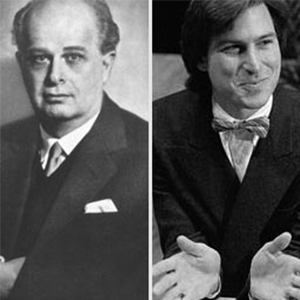
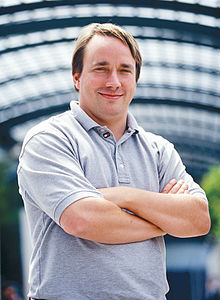

Olivetti - Jobs
12/10/2016
Il nostro percorso di alternanza inizia, prima, dal confronto dai due uomini piu' visionari dell'epoca recente: Olivetti e jobs. Qui abbiamo visto dei video sulla loro vita e sulle loro aziende: cosi' lontante, ma cosi' vicine.
Oltre a questi due grandi personaggi, abbiamo visto chi e cosa c'e' dietro alla maggiorparte dei sistemi informatici moderni: Linux
Olivetti
Nato in Italia nel 1901 inventa la prima macchina da scrivere leggera e portatile. Nel 1945 dopo la 2° guerra mondiale e dopo essersi allontanato dall’azienda Olivetti torna a Ivrea, sede principale, dove ricomincia a produrre. In quel periodo inventa la Lettera 22 con la quale riscuote molto successo e vince numerosi premi. Nel 1953 si arriva alla sovraproduzione ma Olivetti fa di tutto pur di non licenziare personale finché nel 1960 non muore e lascia l’azienda.
Jobs
 Dopo essersi diplomato e aver partecipato ad un corso di calligrafia, che gli fu molto importante in seguito, Jobs incominciò a lavorare all'Atari insieme Wozniak. Successivamente, stufatosi del suo lavoro, lui e il suo amico decisero di mettersi in proprio dove nel 1976 fondarono la Apple Computer. Da quel momento fu tutto in salita, dove sfornarono prodotti come il Mac, l'iPod e iPhone.
Dopo essersi diplomato e aver partecipato ad un corso di calligrafia, che gli fu molto importante in seguito, Jobs incominciò a lavorare all'Atari insieme Wozniak. Successivamente, stufatosi del suo lavoro, lui e il suo amico decisero di mettersi in proprio dove nel 1976 fondarono la Apple Computer. Da quel momento fu tutto in salita, dove sfornarono prodotti come il Mac, l'iPod e iPhone.
La mente dietro linux

Durante l'intervista a Linus Torvalds da parte della famosa conferenza che si tiene ogni anno a vancouver, TEDx si e' parlato come abbia cambiato il mondo informatico più volte: la creazione del kernel linux su cui si basa la maggior parte dei server per internet e di 'GIT' che è un software di controllo per uno sviluppo di linux più semplicemente. Nell'intervista si capisce che lui non si definisce un visionario, ma che è solamente un ingegnere con la grande passione della programmazione.